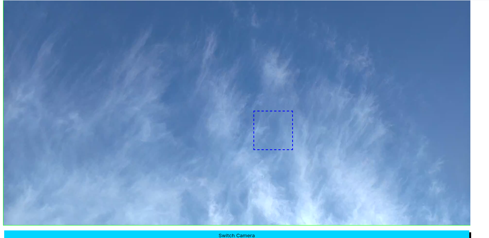

カラーコードマッッチャー一度使ってみませんか？
このアプリでは、カメラに写った物の色を測定し更にその色を選択し同じ色を探すことができます。例えばトマトの収穫とかで役に立ちますよ。

このアプリの特徴
- アプリをインストールせずにアプリと同様の機能を使用することができる。
- 更新は簡単でアプリあるいはサイトをリロードか再起動させることで更新完了する
- 会員登録不要
- 広告なしで利用可能です。
- 情報の心配ご無用、情報収取は一切ありません。
アプリのダウンロードや使用こちら
※アプリのダウンロードはブラウザ動作のHTMLファイルでダウンロードです。ファイルマネージャーからダウンロードしたアプリを展開してindex.htmlを開けば利用可能です。うまく機能しない場合は、サードパーティー製のhttpサーバーにファイルを入れて起動ご設定したローカルIPからご利用が可能です。